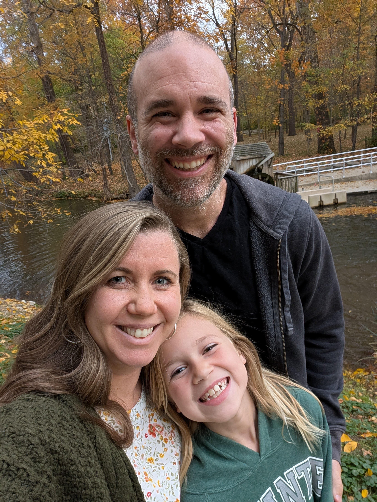

Engineering Leader & Manager
Building teams that build great things
I balance technical challenges with the human side of management, creating environments where engineers feel empowered to do their best work.

About Me
I'm an engineering leader who thrives on balancing technical challenges with the human side of management. Over the years I've worn many hats, from tackling deeply technical problems to guiding teams through ambiguity, and I've learned that the key to success lies in authenticity and connection. When people feel empowered to bring their true selves to work, amazing things happen.
As a manager, I focus on creating an environment where engineers can excel. I believe in clear communication, aligning on shared goals, and removing roadblocks so teams can focus on what they do best: building great solutions. I'm passionate about fostering a culture where people feel supported, valued, and excited to solve problems together.
On the technical side, I enjoy diving into complex systems and breaking them down into manageable, scalable solutions. I'm always curious and ready to explore new approaches, whether it's leveraging cutting-edge tools or refining tried-and-true methods. At the core of my work is a belief in simplicity, whether it's in the systems we build or the processes we follow.
I hold authenticity as a guiding principle. Leadership is about more than just driving results; it's about building trust, understanding individual perspectives, and encouraging people to grow both professionally and personally. My goal is to lead with empathy, stay adaptable, and always keep learning.
When I'm not leading teams or solving problems, I'm likely exploring ways to be a better version of myself by studying psychology and productivity techniques.